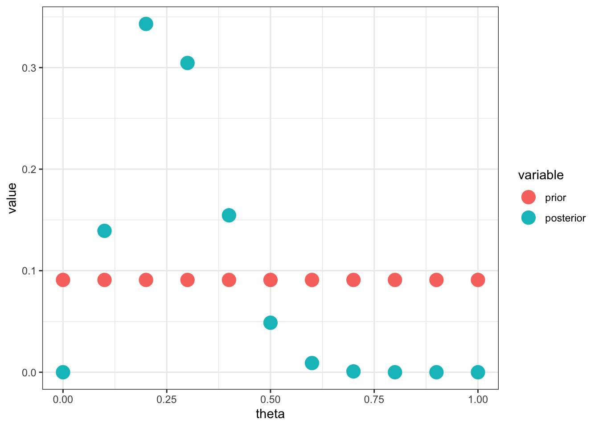

Chapter 7 Bayesian Hypothesis Testing
Prior probabilities on simple hypotheses
Let \(Y \sim p(y\mid \theta)\) and \(H_j: \theta = \theta_j\) for \(j = 1, \ldots, J\). Treat this as a discrete prior on the \(\theta_j\), i.e. \(P(\theta = \theta_j) = p_j\).
The posterior is \[ P(\theta = \theta_j\mid y) = \frac{p_jp(y\mid \theta_j)}{\sum_{k = 1}^J p_kp(y\mid \theta_k)} \propto p_jp(y\mid \theta_j) \]
For example, suppose \(Y_i \sim Ber(\theta)\) and \(P(\theta = \theta_j) = 1/11\) for \(j = 0, \ldots, 10\). The posterior is \[ P(\theta = \theta_j \mid y) \propto \frac{1}{11}(\theta_j)^{n\bar j}(1-\theta_j)^{n(1-\bar y)} \]
n = 13; y = rbinom(n,1,.45)
d = ddply(data.frame(theta = seq(0,1,by=0.1), prior=1/11),
.(theta, prior),
function(x) {
data.frame(posterior = x$prior * x$theta^sum(y)*(1-x$theta)^(n-sum(y)))
})
d$posterior = d$posterior/sum(d$posterior)
ggplot(melt(d, id.var="theta"), aes(x=theta, y=value, color=variable)) +
geom_point(size=5) +
theme_bw()
Bayesian hypothesis testing with all composite hypotheses
Let \(Y \sim p(y\mid \theta)\) and \(H_j: \theta \in (E_{j-1}, E_j]\) for \(j = 1, \ldots, J\). Just calculate the area under the curve, i.e. \[ P(H_j\mid y) = \int_{E_j - 1}^{E_j} p(\theta\mid y)d\theta \] For example, suppose \(Y_i \sim Ber(\theta)\) and \(E_j = j/10\) for \(j = 0, \ldots, 10\). If we assume \(\theta \sim Be(1,1)\), the posterior is \[ \theta \mid y \sim Be(1 + n \bar y, 1 + n[1 - \bar y]) \]
Ej = seq(0,1,by=0.1)
vlines = data.frame(x=Ej, xend=Ej, y=0, yend = dbeta(Ej,1+sum(y), 1+n-sum(y)))
heights = data.frame(x=Ej[-1]-.05, y=0.4,
label = round(diff(pbeta(Ej,1+sum(y), 1+n-sum(y))),2))
ggplot(vlines, aes(x=x,xend=xend,y=y,yend=yend)) +
stat_function(fun=function(x) dbeta(x, 1+sum(y), 1+n-sum(y))) +
geom_segment() +
annotate("text", x=heights$x, y=heights$y, label=heights$label) +
theme_bw()
Theorem 7.1 If the prior is proper, and the data are discrete, then the posterior is always proper.
Theorem 7.2 If the prior is proper and the data are continuous, then the posterior is almost always proper.
Theorem 7.3 If \(p(\theta)\) is improper, then \(p(y) = \int p(y\mid \theta) p(\theta)d\theta\) is imporper.
Proof. \[\begin{aligned} \int p(y) d y &=\iint p(y \mid \theta) p(\theta) d \theta d y \stackrel{T T}{=} \int p(\theta) \int p(y \mid \theta) d y d \theta \\ &=\int p(\theta) d \theta \end{aligned}\]
To evaluate the relative plausibility of a hypothesis (model), we use the posterior model probability: \[ p\left(H_{j} \mid y\right)=\frac{p\left(y \mid H_{j}\right) p\left(H_{j}\right)}{p(y)}=\frac{p\left(y \mid H_{j}\right) p\left(H_{j}\right)}{\sum_{k=1}^{J} p\left(y \mid H_{k}\right) p\left(H_{k}\right)} \propto p\left(y \mid H_{j}\right) p\left(H_{j}\right) \] where \[p\left(y \mid H_{j}\right)=\int p(y \mid \theta) p\left(\theta \mid H_{j}\right) d \theta \] is the marginal likelihood under model \(H_j\) and \(p(\theta\mid H_j)\) is the prior for parameters \(\theta\) when model \(H_j\) is true.
- Simple hypothesis can be considered to have a Dirac delta function for a prior, e.g. if \(H_0: \theta = \theta_0\) then \(\theta\mid H_0 \sim \delta_0\). The marginal likelihood is \[ p\left(y \mid H_{0}\right)=\int p(y \mid \theta) p\left(\theta \mid H_{0}\right) d \theta=p\left(y \mid \theta_{0}\right) . \]
- Composite hypothesis have a continuous prior and thus \[p\left(y \mid H_{j}\right)=\int p(y \mid \theta) p\left(\theta \mid H_{j}\right) d \theta \]
If we only have two models, \(H_0\) and \(H_1\), then \[ p\left(H_{0} \mid y\right)=\frac{p\left(y \mid H_{0}\right) p\left(H_{0}\right)}{p\left(y \mid H_{0}\right) p\left(H_{0}\right)+p\left(y \mid H_{1}\right) p\left(H_{1}\right)}=\frac{1}{1+\frac{p\left(y \mid H_{1}\right)}{p\left(y \mid H_{0}\right)} \frac{p\left(H_{1}\right)}{p\left(H_{0}\right)}} \]
We define \[ B F\left(H_{1}: H_{0}\right)=\frac{p\left(y \mid H_{1}\right)}{p\left(y \mid H_{0}\right)}=\frac{1}{B F\left(H_{0}: H_{1}\right)} \] as the Bayes Factor for model \(H_1\) relative to \(H_0\).
Note: With \(p(H_0) = p(H_1)\), the posterior probability is \[ P(H_0\mid y) = \frac{1}{1 + \frac{1}{BF(H_0:H_1)}} \]
Binomial Model
Consider a coin flipping experiment so that \(Y_i \sim Ber(\theta)\) and the null hypothesis \(H_0: \theta = 0.5\) versus the alternative \(H_1: \theta \neq 0.5\) and \(\theta\mid H_1 \sim Be(a, b)\). Suppose \(a, b = e\rightarrow 0\), then \[ B F\left(H_{0}: H_{1}\right)=\frac{0.5^{n} B e(e, e)}{Be(e+n \bar{y}, e+n - n\bar y)} \stackrel{e \rightarrow 0}{\longrightarrow} \infty \quad \text { for any } \bar{y} \in(0,1) \]
d = expand.grid(e=10^(0:-4), ybar=seq(0,1,by=0.01), n=20)
bf = function(n,ybar,a=1,b=1)
exp(n*log(0.5)+lbeta(a,b)-lbeta(a+n*ybar,b+n-n*ybar))
d = ddply(d, .(n,ybar,e), summarize, bf=bf(n,ybar,e,e))
post_prob = function(bf, prior_odds=0.5)
1/(1+1/bf*prior_odds)
ggplot(d, aes(x=ybar, y=post_prob(bf), color=factor(e))) +
geom_line() +
labs(y=expression(paste("p(",H[0],"|y)"))) +
ylim(0,1) +
scale_color_discrete(name="e") +
theme_bw()Normal Example
Consider the model \(Y \sim N(\theta, 1)\) and the hypothesis test
- \(H_0: \theta = 0\) versus
- \(H_1: \theta \neq 0\) with prior \(\theta\mid H_1 \sim N(0, C)\).
The predictive distribution under \(H_1\) is \[ p\left(y \mid H_{1}\right)=\int p(y \mid \theta) p\left(\theta \mid H_{1}\right) d \theta=N(y ; 0,1+C) \] and the Bayes factor is \[ BF(H_0: H_1) = \frac{N(y; 0, 1)}{N(y; 0, 1+C)} \stackrel{C\rightarrow \infty}{\longrightarrow}\infty \]
d = ddply(expand.grid(y=seq(0,5,by=1), C=10^seq(0,4,by=0.1)), .(y,C), summarize,
post_prob_H0 = 1/(1+1/exp(dnorm(y,0,1,log=TRUE)-dnorm(y,0,1+C,log=TRUE))))
ggplot(d, aes(sqrt(C), post_prob_H0, color=factor(y))) +
geom_line() +
labs(x = expression(sqrt(C)), y = expression(paste("p(",H[0],"|y)"))) +
scale_color_discrete(name="y") +
theme_bw()7.0.0.0.1 Jeffrey-Lindley Paradox
Definition 7.1 The Jeffrey-Lindley Paradox concerns a situation when comparing two hypothesis \(H_0\) and \(H_1\) given data \(y\) and find
- a frequentist test resul is significant leading to rejection of \(H_0\), but
- the posterior probability of \(H_0\) is high
This can happen when: (1) the effect size is small; (2) \(n\) is large; (3) \(H_0\) is relatively precise; (4) \(H_1\) is relative diffuse, and (5) the prior model odds is \(\approx\) 1.
Example: suppose \(n = 10000\) and \(y = 4900\), the p-value is about 0.045 so we reject \(H_0\) as the 0.05 level. The posterior probability of \(H_0\) is \(0.96\) so the probability of \(H_0\) being ture is 96%.
paradox = expand.grid(n=10^(seq(0,5,by=0.1)), ybar=0.49)
pvalue = function(lrt,df=1) 1-pchisq(-2*log(lrt),df)
lrt = function(n,ybar) exp(n*log(0.5)-n*ybar*log(ybar)-n*(1-ybar)*log(1-ybar))
post_prob = function(bf, prior_odds=0.5) 1/(1+1/bf*prior_odds)
bf = function(n,ybar,a=1,b=1) exp(n*log(0.5)+lbeta(a,b)-lbeta(a+n*ybar,b+n-n*ybar))
paradox = ddply(paradox, .(n,ybar), summarize, pvalue=pvalue(lrt(n,ybar)), post_prob=post_prob(bf(n,ybar)))
m = melt(paradox, id=c("n","ybar"))
p = ggplot(m, aes(log10(n),value,col=variable)) +
geom_line() +
theme_bw()
print(p)The test statistic with point null hypothesis:
\[ \begin{aligned} \lambda(y) &=\frac{p\left(y \mid \theta_{0}\right)}{p\left(y \mid \hat{\theta}_{M L E}\right)} \\ B F\left(H_{0}: H_{1}\right) &=\frac{p\left(y \mid \theta_{0}\right)}{\int p(y \mid \theta) p\left(\theta \mid H_{1}\right) d \theta}=\frac{p\left(y \mid H_{0}\right)}{p\left(y \mid H_{1}\right)} \end{aligned} \]
A few comments:
- The LRT chooses the best possible alternative value
- THe Bayesian test penalizes for vagueness in the prior
- The LRT can be interpreted as a Bayesian point mass prior exactly at the MLE
- Generally, p-values provide a measure of lack-of-fit of the null model
- Bayesian tests compare predictive performance of two Bayesian models (model+prior)
Prosecutor”s Fallacy
It is common for those using statistics to equate the following
\[ \text { pvalue } \stackrel{?}{=} P\left(\text { data } \mid H_{0} \text { true }\right) \neq P\left(H_{0} \text { true } \mid \text { data }\right) \]
but we can use Bayes rule to show that these probabilities cannot be equated \[ p\left(H_{0} \mid y\right)=\frac{p\left(y \mid H_{0}\right) p\left(H_{0}\right)}{p(y)}=\frac{p\left(y \mid H_{0}\right) p\left(H_{0}\right)}{p\left(y \mid H_{0}\right) p\left(H_{0}\right)+p\left(y \mid H_{0}\right) p\left(H_{0}\right)} \] This situation is common enough that it is called The Prosecutur’s Fallacy.